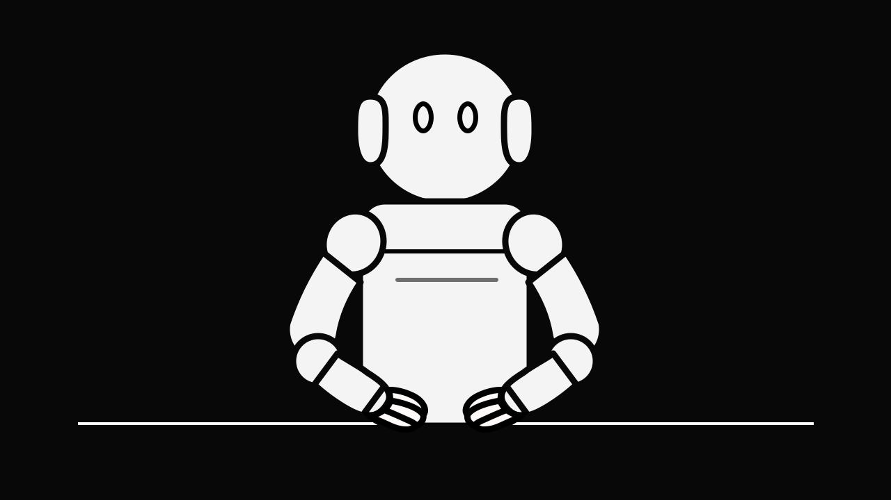
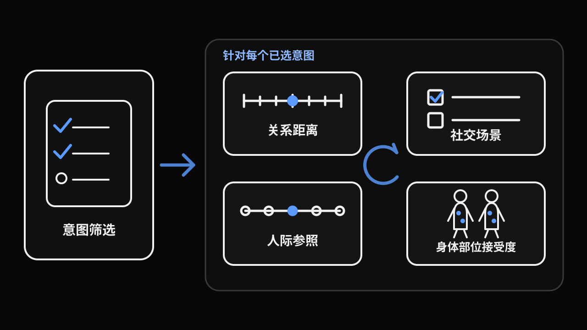

请将本研究中的机器人想象为一个具有人形上半身结构的社交机器人：它具有类似人体结构的机械手臂和手部，整体身高略低于成年人，主要通过手臂或手部主动触碰人的身体。
本问卷中的“社交触摸”指机器人对人身体发起的直接、短暂、柔和、非疼痛、非强制性的身体接触。请先判断机器人是否适合通过这种接触表达某种社交意图，再在后续页面标注你认为可接受或不可接受的身体区域。

填写时，你需要先选择认为适合由机器人主动传达的社交意图。对每个已选意图，问卷会依次询问关系亲近度、互动语境、人际触摸方式的参照程度，以及不同身体部位被触碰的接受程度。
你的回答仅用于学术研究。本问卷不会收集你的姓名或直接联系方式，你可以在提交前随时退出。
问卷涉及身体部位与社交接触判断。如果你对此感到不适，可以随时停止填写。
请确认你已年满 18 岁后再继续填写本问卷。